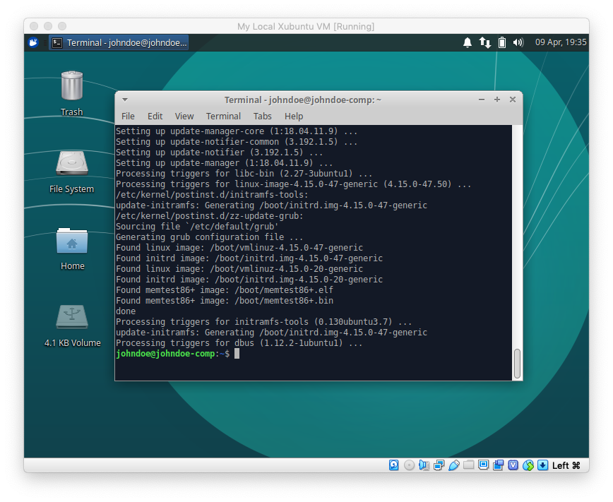

Step 1 — Install VirtualBox
Download Virtualbox app & extension pack: https://www.virtualbox.org/wiki/Downloads
Install Virtualbox app.
Install VirtualBox extension pack through settings menu.
Step 2 — VM Initial Setup
Create new VM (blue star button). 1024 MB RAM is enough for Xubuntu.
Hard drive emulation
.vdi
disk image file
will grow
as you write to it
(meaning of "dynamically allocated")
until
filesize reaches maximum
you set now.
Result:
Step 3 — Install Xubuntu
Xubuntu downloads: https://xubuntu.org/download/. Use appropriate mirror.
Download
xubuntu-18.04-desktop-amd64.iso
disk image file.
Insert Xubuntu .iso file
into VM's virtual optical drive
so that the VM will boot from it.
Result:
Start VM (green arrow). Choose "Install Xubuntu".
Check both boxes.
Don't bother with encryption/LVM.
Best to use all lowercase and no spaces for username and computer's name.
Wait for this:
Just press enter
4 — Update VM
Log in.
Dismiss update prompt. When using linux, especially when performing system administration tasks such as updating and installing software, avoid GUI controls; use the terminal instead.
Open terminal.
Command
sudo apt update
updates "package lists"
(info about software and dependencies)
- not the software itself.
Command
sudo apt update and
sudo apt upgrade
one after the other to
update the system.
Type y then press enter
Wait for finish:
5 — Create Shared Folder
Must install "guest additions" in order for shared folder to work. Insert guest additions virtual CD.
View contents with file manager.
Run commands
cd /media/Your_Username/VBox_GAs_6.0.4/
&& ls
and
sudo ./VBoxLinuxAdditions.run
to navigate to
and execute
the guest additions script
for linux.
Or enter them like in the screenshot.
Basic commands:
clearclear terminalcdchange directory (folder)pwdprint working (current) directory/is the root directory (contains everything)lslist directory contentssudo"superuser do" - when password required&&execute multiple commands on one line- tab autocomplete.
Error:
Troubleshoot by installing necessary packages
with command:
sudo apt update && sudo apt install build-essential gcc make perl dkms.
Source: askubuntu.com/questions/1035030/virtualbox-guest-additions-installation-problem/1035043
Execute it again. Be sure you are still in the directory that contains the executable (blue filepath before prompt).
Success:

Create a folder on host OS. Go to settings for the VM. Point to the folder you just created in shared folder submenu. Check auto-mount and permanent options.
Result:Create a text file on host OS and save it into shared folder.
Try to access shared folder
through VM
with command
cd /media/sf_vm-shared
Get denied.
Troubleshoot by adding user
to group vboxsf
Try accessing folder again - get denied again. (Won't work until you log out then back in).
Source: stackoverflow.com/questions/26740113/virtualbox-shared-folder-permissions
Log out, then back in, then try again:
6 — Set Up Shared Clipboard
Must use shift key to copy/paste from/to the terminal.